Psi Robotics / Research Note
Scaling Pair Data for Embodied Intelligence
The hand is the instrument of instruments. — Leonardo da Vinci
数据对于具身是一个非常重要的部分，但是怎么 scaling 数据，需要 scaling 什么样的数据，仍然是一个值得探究的问题。我们新发布 Psi-R2.5 模型，通过对人类数据的不断清洗和优化，明确了我们需要什么样的数据和相关属性，对模型训练有了一些新的理解。下面从数据的角度给大家分享一下最近的进展。

Chapter 1
Psi-R2.5: Scaling Quality, Not Just Size
我们最新一代的R2.5模型采用双层架构，上层选择QwenVL3.5-4B作为backbone再使用我们自采的数据用来预训练，将一段长的instruction拆解成对应的subtask，包含比如memory，soft prompt等的meta context，以及RL意义上的value，再将其和当前观测输入进下层模型中，输出机器人具体的操作轨迹。下层模型选择Wan2.2-IT2V-5B作为backbone，同样加上我们自采的数据用来预训练。对比上一代 R2，R2.5 最核心的升级在于数据质量提升和数据属性压缩。当数据量积累到 10 万小时后，我们没有继续盲目堆数据，而是对全部数据做了一轮完整复盘，提取出真正高质量的10万小时数据。我们在数据侧做了很多数据信息量的压缩，将人类数据到机器人数据的转换通过scaling大量的强pair data进行提升，并优化了数据质量的定性和定量分析。同时，对于基模来说，评测越来越起到重要的作用。一方面，我们在模型大小脑训练的过程中就将仿真测评引入，将仿真数据作为预训练的一部分任务加入进去，并在仿真器中直接进行zero-shot的评测。另一方面，对于最终模型的性能判定，我们设定了一个50个复杂任务的多任务的真机评测集，并在测评时不断随机化各个任务的初始状态，希望能给组合泛化提供一个优质的测评方案。
对具身预训练模型而言，模型架构并非决定性因素，架构迭代速度快，两三天即可完成一轮替换；真正决定模型性能上限的是数据。具身数据由于其模态多的原因，清洗难度比其他数据类型难得多。如果直接将全部原始数据混合输入模型训练，模型会隐式学习出一个分类器，优先区分输入样本属于人类演示数据还是机器人真机数据，再调用对应的参数进行推理。这也引出使用人类演示数据的核心命题：如何让模型站在机器人的视角去理解人类演示。我们在R2.5上的提升主要在两点，一是我们使用强pair data对人类数据和机器人数据进行一个对齐，二是在语言层面上对数据标注的精度做更高的要求。对于第一点，在不少工作中，大家会将一些人类和机器人做类似任务，比如都拿同一瓶可乐，这种对应的数据专门标记起来，一起输入进模型里面用作模型训练，希望能学到一些人类数据和机器人数据的对应关系。这种数据叫做pair data。在我们四月发布的R2和W0中，我们通过在世界模型中做强化学习的方式可以将人类数据显式转换成对应的机器人的数据。这一套流程可以产出带action的，直接能在机器人上replay成功轨迹的机器人数据，但是整体流程比较复杂。我们把这种图像上除了本体外其他基本一致，时序上每一帧都能对应上，同时action是能直接在机器人上replay出来的pair data叫做强pair data。而一些只是按着相同任务语义收集的数据叫做弱pair data。这种强pair data本质上是将人类数据的dynamic拉到和机器人数据的dynamic一个domain里面，并且具备可拓展性。在以往几乎很难采集到高质量的强pair的数据，基本都是弱pair的数据，因此无法直接这么对齐。为了更高效地生产这种强pair data，我们在通过R2和W0生成了很多高质量的强pair data之后直接训练了一个端到端的数据转换模型，可以实现人类数据和机器人数据的强pair的直接映射。具体的实现方法在后面的章节会有详细介绍。除了pair data以外，还有一个重要的数据属性是语言的标注精度，我们所有的数据都通过我们的数据管线进行标注，将每一个分解的原子任务都标注得尽量细致。同时，我们对任务的多样性提出了非常高的要求。我们尽可能地将单个任务的数据量减少，然后通过运维的方法来保证任务的多样性。很多时候数据时长本身是很难衡量数据的信息量的，假设有10000小时数据，100个任务，每个任务100小时，他的信息量可能和100小时，100个任务，每个任务1小时一样。因此，我们会严格压缩同样小时数里面的数据量，尽可能地采集更多的任务，然后在标注的阶段对各项原子动作进行精细的标注和审核，保障数据的质量。
弱 Pair Data
基于相同任务语义配对
强 Pair Data
场景与时序逐帧对齐
具身智能能力的构建并非一蹴而就，我们判断预训练与后训练将长期共存、互为补充。预训练的目标在于打造通用能力底座，从源头降低下游任务适配所需的数据规模与成本，这也是区别于传统自动化方法的商业价值的核心所在。然而，仅凭预训练模型直接部署至客户现场，短期内仍难以实现：现场作业所涉及的 SKU 与节拍高度定制化，通用数据难以直接覆盖实际需求。因此，后训练作为连接基础模型与真实场景的关键环节，在可预见的长期内不可或缺，将与预训练共同构成完整的模型能力闭环。我们开发了一套基于灵巧手的后训练HIL与RL框架，可以在我们基础模型的基础上通过非常少量的数据进行微调后完成复杂任务，并在部署时实时收集失败案例，回流数据，提高模型的能力。我们以手机盒装配任务为例，这是一个步骤多且要求非常精细的任务，直接from scratch用模仿学习训练之后的成功率比较低。而通过我们的HIL与后训练RL框架，在经过几轮的迭代之后可以将成功率提高到99%的程度，并且只需要花费1-2个工作日。该方案同时也部署在了我们实际的客户现场，来解决各种复杂的corner case。
Chapter 2
Scaling Pair Data for Embodied Intelligence
最近，人类数据成为了大多数人的研究对象。但是，如何将人类数据的质量提高到和真实机器人一样，如何将人类数据往机器人数据进行对齐，是使用人类数据最核心的问题。长期以来，人类数据被认为只能用于预训练。大多数研究这方面的工作会先用人类数据进行大规模预训练，接着使用真机数据进行后训练来完成任务。但是，这种一股脑将人类数据塞进模型里的做法是非常粗暴的。对于某一个固定的评测环境来说，当模型拿高质量数据训练了之后，你再加入其他低质量的数据，反而对模型是有害的。这是因为这时候对于模型来说低质量数据带来的噪声多于信息量，因此整个的效果反而会下降。所以，大部分直接将人类数据加入预训练中的方法难以回答这个问题，因为人类数据的信噪比是远低于真机数据的。试想，若针对某一任务采集了人类演示数据，却连一个能够完成该任务的模型都无法训练出来，那么又如何确保将这些数据纳入模型训练后，会对该任务的表现产生实质性增益呢？因此，大多数人类数据的预训练只能在high-level层面上有一些指导，对于真正机器人操作起到的作用非常有限。而具身最关键的就是如何补足操作模态的数据。这个感觉和很多研究Zero-Shot Sim2Real的工作的理由是一样的。很多时候做Zero-Shot而不是Few-Shot的原因是为了验证仿真的有效性。如果纯用仿真数据训练出的模型的效果不好的话，大概率这个数据质量/仿真器参数是有问题的。所以人类数据也是一样的，能直接训练出模型的人类数据，才是质量最高的人类数据。而这种数据，才是我们想要拿来做预训练使用的。因此我们认为，对于人类数据预训练来说，有一套人类数据质量分析方法，来衡量人类数据的有效性和质量是非常重要的。我们搭建了两个测试的方法，一是将处理完的数据直接在机器人上进行replay轨迹，看能否完成同样的任务，二是用处理完的数据用于后训练，训练完的模型能泛化地完成相关任务。我们使用强pair data训练出来的数据转换器，能够直接将人类数据转换成机器人数据，完成数据对齐，并较好地完成上面两个测试。下面我介绍一下用人类数据后训练的一些业内的情况，并给出我们是怎么使用强pair data完成这一点的。
虽然是少数，但是学术界也已经慢慢有相关的研究出现。和sim2real gap类似，只使用人类数据进行训练的embodiment gap也可以拆分成2个具体的gap：
- Visual Embodiment Gap 人类数据无论是戴着手套，还是裸手，视觉上都会和机器人推理时差得比较大。这里的差异不只是视频里人手和机器人像素上的差别，还包括相机参数，环境变化等。
- Dynamic Embodiment Gap 人类数据是用人手对物体进行操作，action通常是通过设备或者视觉算法来获得。他和直接的机器人的数据会有三种误差，第一种是手部姿态估计的传感器或者视觉估计误差，第二种是由于人手和机器人关节不一样的运动学误差，第三种是人手的物理参数和机器人物理参数的误差（例如手的摩擦力和机器人的摩擦力不一样）。
所有的纯人类数据训练方案基本都是围绕着怎么解决上面两个问题出发的，一部分已有的方案可以总结为对人类数据进行real2sim重建到仿真器中，通过轨迹优化或强化学习等方法训练出模型，然后直接sim2real。这套方案最早是很多做Sim2Real的工作的延伸，问题有两个，一是real2sim技术本身也比较难scale up，二是还是会面临sim2real gap的问题。还有的工作不走在仿真器中训练模型然后sim2real的路线，而是将仿真器用来做类似数据处理的方法来解决Embodiment Gap。对于Visual Embodiment Gap，一般的做法是先分割，再inpainting，然后再把渲染的机器人贴上去。对于Dynamic Embodiment Gap，类似上面的方法用轨迹优化或强化学习进行处理，最后得到更好的数据来训练一个policy。这套方案和上一个方案最主要的区别是不是直接在仿真器里训模型再sim2real，而是用仿真做数据处理然后再用模仿学习训一个visuomotor的policy，但是同样会面临一是real2sim技术本身难scale up的问题，二是图像inpainting这一套视觉处理的管线有天生缺陷，很难处理复杂的关系例如遮挡等。例如一部分工作能把人手换成机械手，但由于深度估计问题，现有的传感器精度是无法区分手上的手指与物体的遮挡关系的，因此只能保留穿模的视觉效果。而对于模型来说这些interaction的信息才是最重要的。
因此，这个方向基本长期只能做一些比较简单且定制化的任务，以致于很多人认为纯靠人类数据是无法训练出操作比较复杂的模型的。我们团队研究这个方向非常早，基本上所有方法我们都尝试过。最后我们通过用世界模型代替仿真器的方式，通过十万小时规模的人类数据进行预训练，我们的Psi-W0可以代替上面方法中仿真器的作用，通过在仿真器里做强化学习的方式，将一条人手轨迹优化成可执行的机器人轨迹，完成人手数据到机器人数据的转换。
本质上这一套方案还是沿用了之前的思想，只不过用世界模型来代替了传统的仿真器，好处是上面的各种sim2real和难以scale up的问题可以绕过去。到这算是解决了一部分问题，但接下来的是这一套方案会比较重，又需要Policy和World Model相互rollout又需要强化学习做微调的。因此，我们将通过Psi-W0转换完的强pair data收集起来，将整一个流程进行蒸馏，来直接训练人类数据到机器人数据的对齐转换模型。但是这样还是比较慢，后来我们思考，这一套，包括之前的方法麻烦在于本质上是因为：对于一条已有的人类数据，我们需要凭空造出与其对应的机器人数据，所以才需要各种强化学习/轨迹优化之类的方法来减少embodiment gap。但是反过来想，那为什么不能从已有的机器人数据出发，造出对应的人类数据呢。机器人数据无论是visual还是dynamic，都是可以直接用的。如果我们能获得大量的和真机数据匹配的人类数据，然后训一个模型，输入是人手的数据，输出是匹配的机器人的图像和action，就可以直接做到纯使用人类数据训练模型。想通了上面的逆向思维后，我们逆向使用Psi-W0，从真正的机器人数据出发逆向生成对应的人手的数据，直接产生高质量的pair data。
有了这些数据之后，我们可以直接训练一个带action的端到端人类数据到机器人数据的转换模型，直接将人类数据往机器人数据进行对齐。这些数据通过我们的模型转换后再使用我上面说的两种验证方式验证，证明其可行性。从结果来看，经过我们模型转换完的人类数据都能直接在机器人上replay/训模型，有一些特别复杂的任务哪怕无法直接完成，双手的轨迹基本都是大差不差的。这是因为这个模型本身不是policy，而是一个带action的视频编辑任务，加上整个机器人的动作空间其实是有限的，因此可以更容易地做到Zero-Shot的泛化。我们的泛化效果已经可以做到大家任意拿自己的手机/相机等录一段人手操作的视频，都可以通过我们的管线将其转化为各种机器人数据。例如下面的视频，就是我们拿自己的手机在随意的一个场景下录制的一段视频转换后的结果，可以看到从图片的重建精度到物理一致性都是比较好的，因此能更好地利用上ego-centric数据的多样性。
Chapter 3
In-Context Learning: From Demonstration to Action
近期，业界广泛关注一种新思路：在不重新训练、不微调模型的前提下，让人示范一次任务，再将采集到的轨迹以类似提示词（prompt）的形式输入模型，以引导机器人完成此前难以完成的任务。这正是当前热门的上下文学习（In-Context Learning，ICL）与测试时训练（Test-Time Training）类方法的基本构想。其背后的逻辑在于：直接训练一个能在任意场景、任意任务（anywhere /any task）上通用的模型极其困难，而训练一个 "观看一次示范即可完成任务" 的模型则相对容易。与大型语言模型不同的是，机器人领域的上下文并非机器人自身的示教视频，而是人类示教视频。依托我们强大的配对数据（pair data）模型，人类数据可被高效转换为对应的机器人数据，从而以更适配的形式作为提示词输入模型。由此，我们可以便捷地实现高效的上下文学习。如以下视频所示，上下文学习使机器人无需更新任何模型参数，即可基于上下文对新任务实现零样本泛化：机器人无需为每个新任务重新训练，仅凭文本提示或物理提示，即可推断应执行什么操作、如何执行。更多ICL相关技术细节将在后续发布。
Closing
Collaborate with Us
如果你对合作感兴趣，欢迎联系我们。我们尤其期待与持续扩大数据采集规模的公司合作。
我们也正在招聘。如果你有兴趣加入我们，也欢迎联系。
如果你对我们的工作、合作机会或其他问题感兴趣，请发送邮件至 market@psirobot.ai。
Back to top